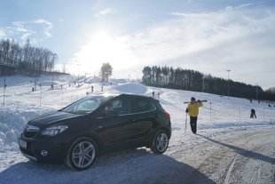

Opel mokka-małe i piękne.
29.12.2019 | 19:22:48 | Dawid Karpczak
Opel Mokka to ciekawy, mały SUV, który z powodzeniem powinien spełnić nasze oczekiwania względem tego samochodu.
Samochody SUV (SUV - Sport Utility Vehicle, co można przetłumaczyć jako pojazd sportowo-użytkowy), powstały wskutek wymagań klientów, którzy poszukiwali aut spełniających walory terenowe, wygodę Vana i komfort limuzyny. Nie miały one jednak zastąpić wersji przemierzających pustynne tereny, lasy, bagna itp., czyli pojazdów wykorzystywanych przez leśników, firmy energetyczne i podróżników. Wprawdzie przejęły od nich wyższy prześwit i napęd na wszystkie koła, ale były tylko rozszerzeniem „oferty cywilnej”. Opel zaprezentował taki model pod nazwą Antara w 2006 roku.
Następne lata przyniosły jednak zmianę ( a raczej zwiększenie) wymagań klientów i w roku 2012 na drogi wyjechał model Mokka, który jest znacznie mniejszy od Antary ( dł/szer/wys: Antara - 4575/1850/1704, Mokka – 4278/1761/1651).
Pomimo pozornie skromnej długości, bo wynoszącej 4,28 metra, Mokka jest w stanie pomieścić pięć osób i… tutaj zarysowuje się pierwszy atut tego modelu w porównaniu z dużym SUV-em. Co z tego, że Antarą może wygodniej podróżować pięciu pasażerów, skoro… zazwyczaj jadą w nim od dwóch do czterech osób. Co z tego, że Antara ma większy bagażnik i na wakacje można zabrać więcej bagaży (Antara – 420-1420 litrów, Mokka – 356-1370 litrów), skoro… na wakacje wyruszamy raz w roku i to często samolotem. Zaś w codziennej eksploatacji, jak na przykładem dojazdy do pracy, Mokka jest niepodważalnym zwycięzcą. Nie dość, że jest samochodem znacznie bardziej zwrotnym i oszczędnym, to dodatkowo jest łatwiejsza w parkowaniu. Nie ma się bowiem co czarować, że duży SUV zaparkuje w takim samym miejscu jak model osobowy o podobnej wielkości. Potrzebuje on więcej miejsca, a wjazd tyłem nie gwarantuje takiej swobody ruchu i widoczności. W przypadku Mokki problem prawie nie istnieje. Parkowanie tym modelem jest podobne jak samochodami minivan.
 W modelu Mokka możemy też spotkać interesujący bagażnik rowerowy FlexFix. Jest on ukrytą w bagażniku szufladą, którą zwalniamy po pociągnięciu dźwigni umieszczonej na rancie bagażnika. Teraz tylko należy zablokować wysuniętą szufladę, zamontować integralne listwy świetlne, rozłożyć stelaż na koła oraz mocowanie ramy i można przypinać rower. Cała obsługa tego urządzenia od rozpoczęcia montażu do zamontowania roweru trwa ok. 1,5-2 minuty i nie wymaga żadnej siły fizycznej. Niestety model z tym bagażnikiem nie ma koła zapasowego i nie może mieć zamontowanego haka holowniczego.Napęd – jeżeli znajdziecie napęd na 4 koła – warto!
Właściwości czynią z Opla Mokki samochód, który spełnia wszystkie potrzeby codziennego życia, a jednocześnie doskonale nadaje się na weekendowe wypady. Jako kompaktowy SUV świetnie sprawdzi się zarówno w środowisku miejskim, jak i pozamiejskim. Badania dowiodły, że przeciętny nabywca Mokki to człowiek w średnim wieku, który prowadzi bardzo aktywny styl życia, u którego wypoczynek odgrywa główną rolę w życiu. Zatem jest to model dla… wielu osób
Komentarze czytelników
Przemyślenia? Reakcje?Zapraszamy do przesyłania opini na naszego maila w zakładce kontakty.Zachęcam do dyskusji w komentarzach poniżej, jednocześnie prosząc o zachowanie etykiety oraz kultury wypowiedzi.

Użytkownik 1 | 30.12.2019| 02:11:27
Mam i gorąco polecam każdemu.
Użytkownik 2 | 31.12.2019| 14:26:55
Sąsiad ma i nie poleca !
Użytkownik 3 | 01.01.2020| 11:11:11
Niemiec to jednak niemiec.Super, gwarancja marki i jakości!
Użytkownik 4 | 11.01.2020 | 13:45:11
Sprawdza się na polskich drogach.